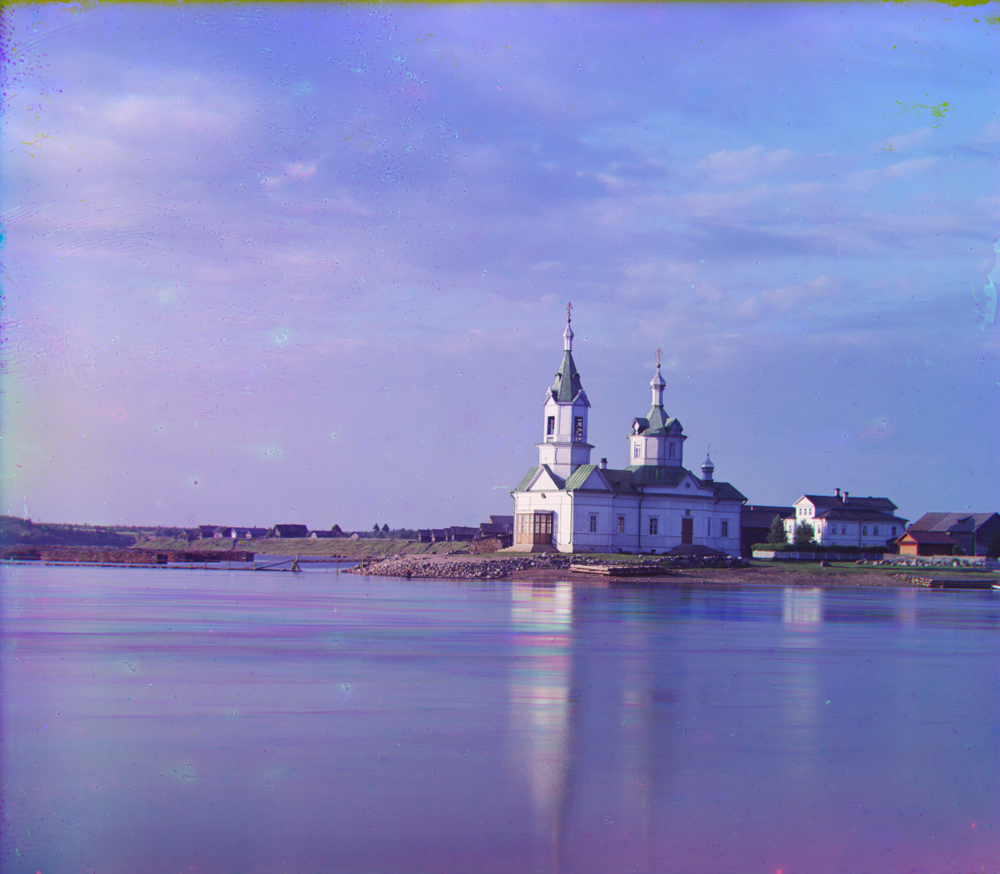
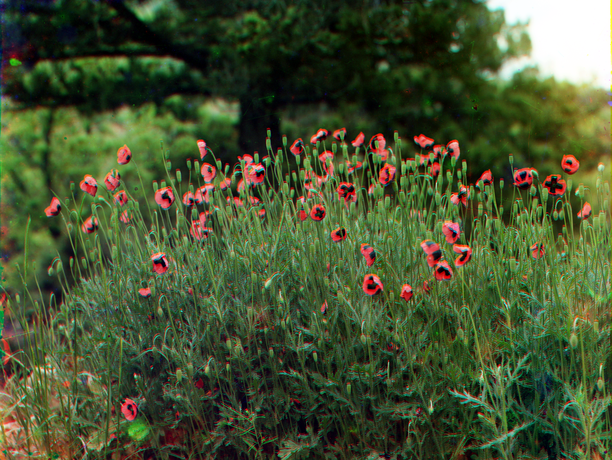
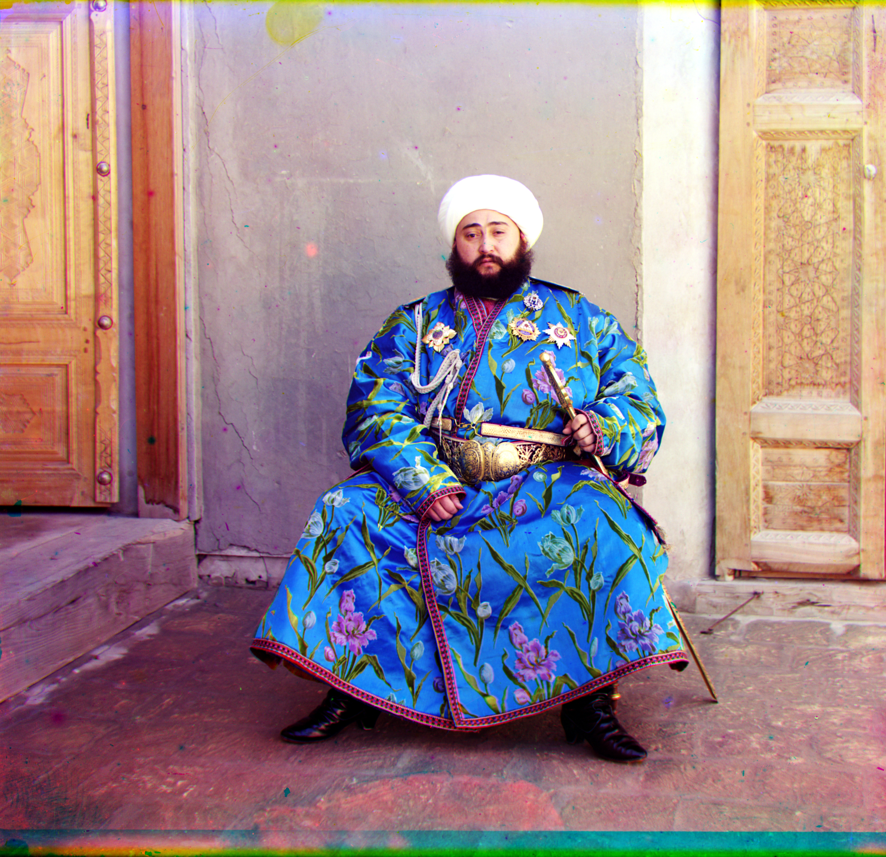
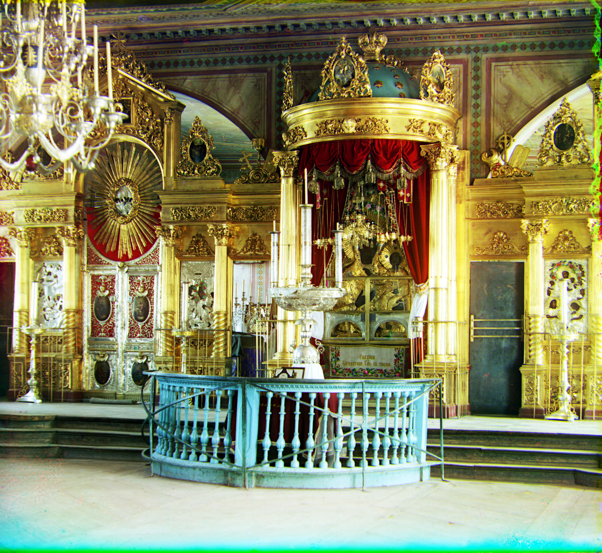

Project 1: Colorizing the Prokudin-Gorskii Collection
CS 280A — Computer Vision and Computational Photography
Overview
Each glass plate holds three grayscale exposures (B, G, R). I split the plate vertically into thirds,
then align Red and Blue to Green using a coarse-to-fine pyramid. At each level I compute
gradient magnitude (√(Gx² + Gy²) via Sobel) and use
normalized cross-correlation (NCC) over the interior to estimate the shift.
- Features: Sobel gradients → gradient magnitude.
- Search: pyramid refinement with small windows around the current estimate.
- Extras: optional auto-crop, gentle 3×3 color mixing, white balance, and contrast.
Baselines


Results — Pyramid Alignment (raw)
Direct RGB composites from the gradient-NCC pipeline (no post-processing).


Results — Pyramid + Bells & Whistles
Same images with optional automatic post-processing.


Bell 1 — Automatic Cropping
I detect and remove colored/black frames using edge-based profiles and interior-normalized thresholds, scanning inward from each side. Notes & parameters go here.



Write-up notes
- Feature used, thresholding rule, and max-crop cap.
- Tricky cases & how I tuned parameters.
Bell 2 — Automatic Contrast
Percentile stretch per channel or jointly. I used low/high percentiles to avoid blowing out highlights.




Write-up notes
- Percentiles used; per-channel vs joint.
- Failure cases & mitigation.
Bell 3 — Automatic White Balance
I tried gray-world (scale channels to equal mean) and max-RGB (scale to equal high percentile).



Write-up notes
- Equation and chosen percentile for max-RGB.
- When WB helps vs. when it hurts.
Bell 4 — Better Color Mapping (3×3 Linear Mix)
Instead of assuming the lenses match sRGB exactly, I apply a near-identity 3×3 matrix that mixes a small fraction of the other two channels into each output (stabilizes color without changing brightness).

Write-up notes
- Matrix form, parameter
s, and why row-sum=1 preserves brightness. - Comparison vs. pure white balance.
Bell 5 — Better Features for Alignment
I replace raw-intensity matching with gradient magnitude + NCC. This emphasizes edges and makes the metric robust to global intensity changes and colored frames along the border.
Write-up notes
- Feature map: Sobel Gx/Gy → magnitude; why NCC over SSD here.
- Pyramid schedule; search windows; runtime.
Takeaways
- Gradient-NCC reduced sensitivity to exposure differences and vignetted borders.
- Auto-crop prevents borders from biasing alignment and improves aesthetics.
- Light 3×3 color mixing plus WB yields natural colors with minimal tuning.